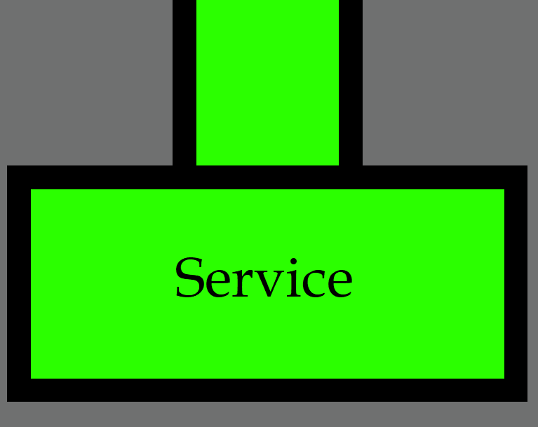
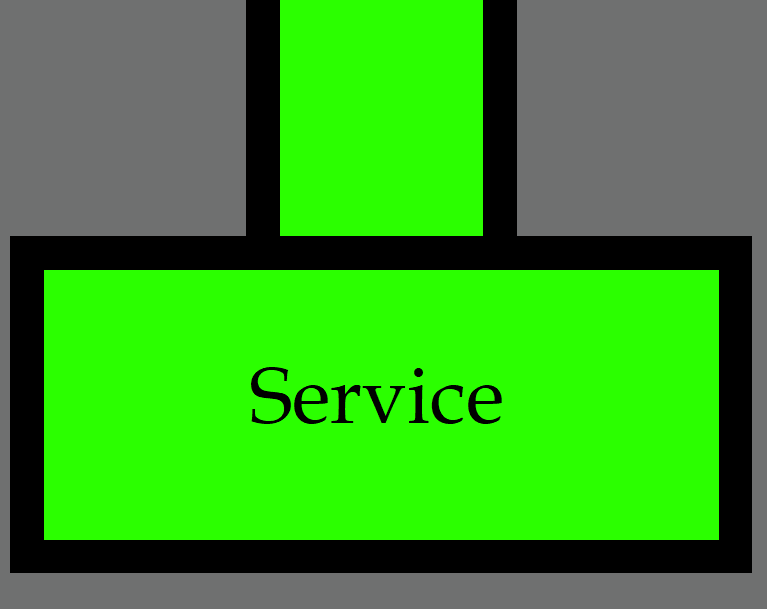
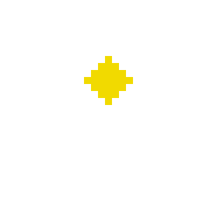
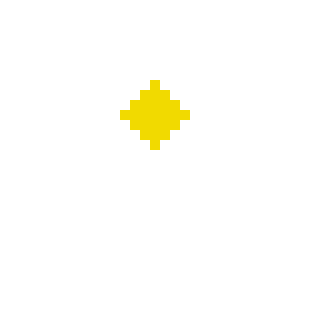

 

|
I am a Computer Science student at Texas A&M University, and am graduating in 2025. Learning coding from a young age fueled my ambition for computer science and am super interested in being one of the forerunners of the future. I am particularly interested in cybersecurity and data science, however, I have found a recent love for Unity game design. I grew up in Saratoga, California. I attended Saratoga High School, and graduated in 2021. I was a member of on-campus organizations, sports, and the band program. I swam for the swimming team for the first three years of high school. The band program was really where I shined. I was a member for all 4 years, and played flute, bassoon, and percussion. I was part of the manager team in junior year, and section leader for senior year. Since I played percussion, I joined and performed in Winter Percussion as well. At the senior ceremony for the band program, I was awarded the Director's Award. It was a specific award selected by the directors themselves, and was for leadership achievements and displays. Outside of school, I was also a soccer referee! I started volunteer refereeing for AYSO in 2014, since I played soccer. I started doing more and more games on the weekends, and chose to also sign up be a USSF referee, a paid position for competitive level soccer games. After some time, I also became an Intermediate AYSO referee, and have started preparing for the advanced AYSO certification. Following freshman year of college, I worked at an after-school program for kids called theCoderSchool. I started out being a normal coach, but gained a lot of experience and started becoming a higher-up coach. During my time there, I taught a variety of classes, including private classes, as well as group classes. I taught elementary to high school students about Java, Python, HTML, Scratch, Unity, Roblox Studio, and Minecraft Development. After my second year of college, I worked at Sabre Corportation as a Software Engineering Intern. I developed in Java as part of the Digital Connect team, which worked as the gateway from front end to all the other API calls. More specifically, I worked on converting the monolith application to a microservices platform and wrote wiremock test cases for a stateless payment service. |